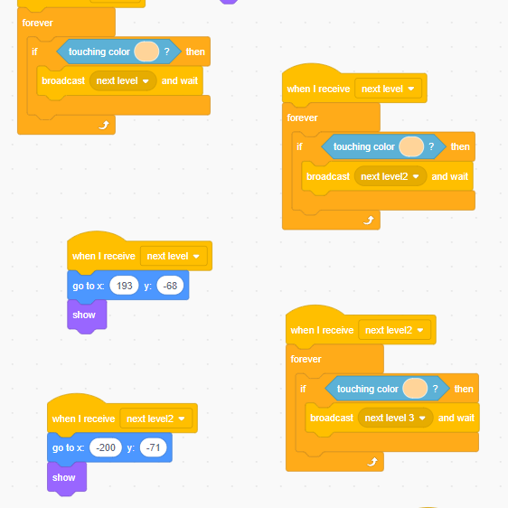
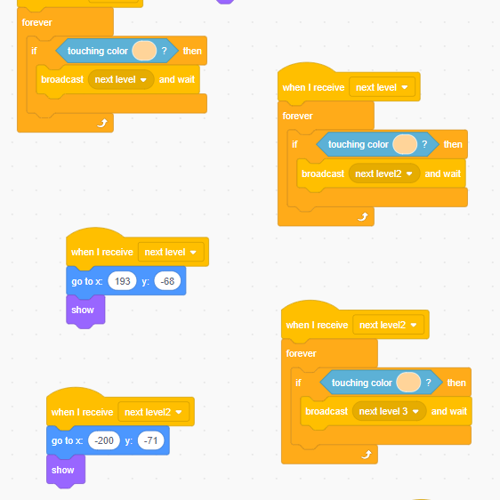

BayRise Computer Science Enrichment Classes
We offer free computer science enrichment classes to disadvantaged youths and young adults, empowering them with the skills and knowledge necessary to succeed in the digital age. We strive to foster a supportive and inclusive learning environment where students can explore their passions, develop critical thinking skills, and gain confidence in their abilities. By bridging the opportunity gap through accessible education, we aim to create a more equitable future for all.
Age Range
Because computer science has such a broad age range, we teach younger kids (9-12), younger teens (13-15), and even young adults (16-20)
Who we work with
We teach our classes wherever we think kids or young adults can benefit from these added learning opportunities. We've partnered with schools, other non-profit organizations, and even groups of individuals.
Pricing (Free!)
Our classes are completely free, and all materials are provided because we believe that everyone deserves the opportunity to learn and succeed. In fact, we leave a laptop with every group of disadvantaged kids we teach. That way, they can continue their projects and learning even when we aren't there.
Sign Up
If you or your group is interested in any of our classes, contact us here.
Curricula
Younger Kids (9-12):
For younger kids, we provide an introduction to coding through Scratch, an easy-to-use block coding language developed by the MIT Media Lab. Our curriculum is designed to be fun and engaging, with a variety of exciting projects that will keep kids motivated throughout the program.
Students start with learning basic game development concepts like the coordinate plane, level and character design, and integrating online assets into their projects. Then, they move on to learning some basic programming concepts like loops, conditionals, and variables.
We encourage students to explore their creativity by designing and developing their own games and animations. This way, we provide a fun and interactive way for younger kids to learn coding while building problem-solving, creativity, and critical thinking skills along the way. By the end of the program, students will have a solid understanding of Scratch and be able to continue exploring more advanced programming concepts on their own.

 

Younger Teens (13-15):
For younger teens, we focus on teaching the Python programming language, which is widely used in various industries such as data analysis, artificial intelligence, and web development. The curriculum is designed to be engaging and fun, with a variety of interesting projects that will keep students motivated throughout the program.
Students start with learning the basic syntax and data types in Python, as well as fundamental programing concepts like loops, conditionals and variables. Then they move on to more advanced concepts like using APIs, file I/O, and web scraping. The curriculum is structured to encourage collaboration and creativity, and students will have plenty of opportunities to share their work and receive feedback from their peers and instructors.
They will work on real-world projects like creating a weather app, building a chatbot, or developing a game. By the end of the program, students will have a solid understanding of Python and the confidence to continue exploring more advanced programming concepts on their own. This way, we provide a fun and engaging way for older kids to learn coding while building problem-solving, creativity, and critical thinking skills along the way.